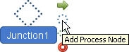
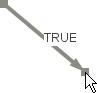
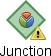
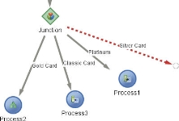
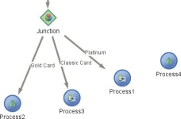

Junction nodes
Using a Junction node in a Decision Process Flow enables the user to state an alternate pathway through the flow for groups of records that satisfy certain criteria. The group of records sent through this pathway is determined by assigning segmentation devices, such as class sets, boolean expressions, matrices and segmentation trees to a Junction node. The outcomes of these segmentation devices are then assigned to other process nodes within the Decision Process Flow in order that records that satisfy any of the criteria will go on to be processed by different processes.
Using a Junction node in a Decision Process Flow enables the user to state an alternate pathway through the flow for groups of records that satisfy certain criteria. The outcomes of these segmentation devices are then assigned to other process nodes within the Decision Process Flow in order that records which satisfy any of the criteria will go on to be processed by different processes.
To add a junction to a Decision Process Flow
- With the Decision Process Flow editor open, left click on either the Start node or another Process node and click on the Add Junction icon,


A junction will be added to the Decision Process Flow and automatically link to the node from which you selected Add Junction.From the Palette, within the Flow Builder, you can also drag and drop the Junction onto the editor.
If you have added a junction to the editor using the Palette, the junction will not be connected to any nodes.
You will need to left click on the Junction node,

then click the Connecting Link arrow and drag the arrow to the Process node or Start node to connect it.
- Right click on the node and select Rename or double click on the name of the Junction node and type a description for it.
- Press Enter on your keyboard.
The system will check to ensure that this name is unique in the Decision Process Flow and give the Junction node the new name.


You can now add additional processes to the Decision Process Flow or assign a segmentation device to the Junction node.
Using a Junction node in a Decision Process Flow enables the user to state an alternate pathway through the flow for groups of records that satisfy certain criteria. The outcomes of these segmentation devices are then assigned to other process nodes within the Decision Process Flow in order that records that satisfy any of the criteria will go on to be processed by different processes.
Segmentation devices can be added from either the Palette, from within Segmentation or from the Resources window.
|
Segmentation and processes listed in the Palette can only be used as place holders in your Decision Process Flow. When these are added to either Process nodes or Junction nodes, the nodes will be displayed in Sketch mode and contain no additional configuration. A Decision Process Flow that contains Processes or Junctions still in Sketch mode can not be deployed or tested. |
To add a segmentation device to a Junction node
- With the Decision Process Flow editor open and a Junction node added, from the Resources window drag and drop the segmentation device you require onto the Junction node. The Junction node will be updated in the Decision Process Flow with a number of pathways to represent the outcomes formed by the assigned segmentation device.

The labels assigned to each pathway will correspond directly to the names of the outcomes created by the class set intervals, the names of the matrix outcomes or they will be displayed as True or False if a boolean expression has been used. The names and number of pathways produced will depend on the segmentation device used. - There are three ways to connect the pathways
- From the Palette drag and drop a Process icon or another Junction icon onto the end point of a pathway.

The system will change how the pathway is displayed to indicate that the pathway is configured. - Pick up the pathway with your mouse

and drag and drop it onto a process.
- Right click on the pathway and from the context menu select either End Node, Junction or Process Node.

The system will change how the pathway is displayed to indicate that the pathway is configured.
- From the Palette drag and drop a Process icon or another Junction icon onto the end point of a pathway.
- Repeat step 2 until all pathways of the Junction have either a Process or a Junction attached.


|
To disconnect a pathway from a Junction, Process Node or End Node, right click on the pathway, and from the context menu select Unjoin. |

Using a Junction node in a Decision Process Flow enables the user to state an alternate pathway through the flow for groups of records that satisfy certain criteria. Pathways can be defined for a Junction node in sketch mode without having to have defined a segmentation device first.
| A fully configured segmentation device will need to be assigned to the Junction node for it to be valid. |
To add pathways to a Junction node in sketch mode
- With the Decision Process Flow editor open and a Junction node added, left click on the Junction node and select Add Process Node.

A pathway will be added. - Repeat step 1 until all pathways have been added.
{kind=link}
Continue editing the Decision Process Flow as required.
Using a Junction node in a Decision Process Flow enables the user to state an alternate pathway through the flow for groups of records that satisfy certain criteria. The outcomes of these segmentation devices are then assigned to other process nodes within the Decision Process Flow in order that records that satisfy any of the criteria will go on to be processed by different processes.
The user may wish to change which pathways point to which node.
To change where the pathways point
- With the Decision Process Flow editor open and a Junction node added with processes applied, click with your mouse on the end of the pathway you wish to move.

- Drag your mouse to the process you wish it to be assigned and click off.
- The pathway will be reassigned.
{kind=link}
Continue editing the flow as required.
The alternate pathways created by the Junction node can be used to process different groups of records that satisfy certain criteria.
Using a Junction node in a decision process flow enables the user to state an alternate pathway through the flow for groups of records that satisfy certain criteria. The group of records sent through this pathway is determined by assigning segmentation devices, such as class sets, boolean expressions, matrices and segmentation trees to a junction node. The outcomes of these segmentation devices are then assigned to other process nodes within the decision process flow in order that records that satisfy any of the criteria will go on to be processed by different processes.
Segmentation devices that have been added to junction nodes are referenced by the decision process flow that uses them. If any of these segmentation devices are changed, for example if an interval in a class set has been added or deleted so that the version used in the decision process flow no longer matches, the junction node will display the following: 
{kind=link}
| A fully configured segmentation device will need to be assigned to the junction node for it to be valid. |
To synchronise a junction node
- With the Decision Process Flow editor open, right click on the junction node that contains the following icon and select Synchronise.
If an interval has been added the system will convert the segmentation device and the junction node will be updated, illustrating clearly which pathway(s) now needs a process adding to it.
- If an interval has been deleted, the system will convert the segmentation device and the junction node will be updated, illustrating clearly which pathway(s) has been deleted.

You will need to re-connect all pathways and processes for the decision process flow to be valid.
A decision process flow that contains floating processes, processes that are not connected to the flow, will be invalid.
- You will need to amend the segmentation device that has been assigned to the junction node and reconnect any orphaned processes or attach a process to the end of new pathways.
{kind=link}
{kind=link}
{kind=link}
Once all the pathways and orphaned processes have been connected the decision process flow will be valid.